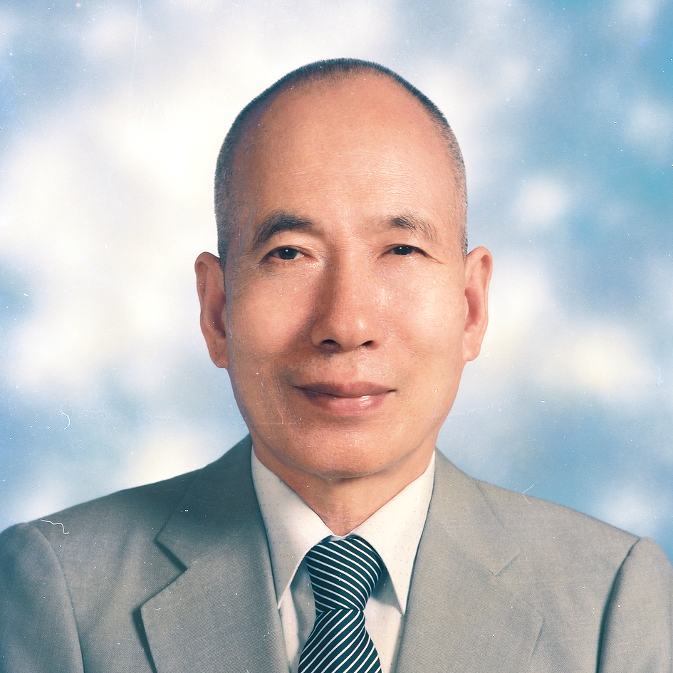

白陽初祖 -- 金公祖師姓路，諱上中下一，山東濟寧人，生於清道光廿八年四月廿四日，自號無線痴人。幼喪父母，少年孤苦。光緒年間赴直隸從軍，後蒙仙佛指引訪清虛祖師求道，將多年積蓄紋銀一百兩獻出，就在十六代祖劉祖處修道，每日打柴作飯苦修苦煉功德無量。劉祖年邁，曾請示上天何人接續道盤，經老母指示批訓後，祖師於清光緒三十一年三月十五日，奉天命掌白陽天盤，開始於山東濟寧闡揚天道，普渡眾生，辦理末後一著收圓大事。迄民國十四年二月初二日歸天，享年七十有六，鶴髮童顏，隔年三月三日，祖師借山西楊春齡竅，顯化一百天，口吐金公妙典，又說彌勒真經傳世。
師尊姓張，諱上奎下生，字上光下璧，道號天然，山東濟寧人，生於清光緒十五年七月十九日。誕生之際，天壇失火，紅光滿天，黃河澄澈，天地垂象，聖人降世之徵。師尊生有異稟，平頂方頭二目重瞳，天縱睿智，秉性淳厚。民國四年遇褚老師得道，聞道不捨，篤信修辦，民國九年褚老師歸天，蒙路祖器重， 隨侍左右，親炙德輝，道業精進。民國十四年路祖殯天，十九年維皇降訓，敕令師尊師母同領天命，接續道統，普渡三曹，師尊師母承命戰兢自持，忍辱負重，道務日興，民國三十四年已遍佈全中國，次年由四川道親迎至成都闡道，民國三十六年八月十五日，一代明師溘然殯天，春秋五十有九，維皇賜封 天然古佛。師尊雖位證至極 ，然眷顧蒼生，誓愿無盡，靈昭感應，大同可期，眾生無不蒙恩。
師母姓孫，諱上素下真，又名上明下善，道號慧明，山東單縣人，生於清光緒廿一年八月廿八日。幼承庭訓，嫻淑貞靜，民國七年得道，慈心廣博，悲願宏深，民國十九年道運推移，維皇明命師尊師母同領天命，使男女平等皆可修辦，乃道降庶民火宅之運數。諸佛四處助道顯化，應驗斑斑，師母聞命深知天意難違，乃敬謹持慎輔佐師尊。三十六年中秋師尊示寂，天地同悲，草木同戚，諸弟子悲慟萬分，師母力挽狂瀾，安定道場，諸弟子為師母德化所召，拋家捨業傳遞心燈，重振聖業。三十八年風雲變色，師母避難香江，四十三年由韓道長克服諸難，迎請聖駕移錫臺灣，師母宏愿感天，終於化危機為生機，使一貫道能頂天立地，合法傳道，再由台灣傳遍世界各國，紛紛受到各國政府肯定。六十四年二月廿三日一代明師溘然殞落，享年八十有一，維皇賜封 中華聖母。
老前人姓韓諱恩榮，號雨霖， 自號白水老人。 光緒廿七年誕生於河北寧河。 幼承庭訓， 知書達禮，孝心誠純， 能文能武。 年輕創業， 經營大德隆織染廠， 勤奮精明， 業務蒸騰. 卅七歲積勞成疾，醫藥罔效， 得縁求道. 蒙受濟公慈悲撥轉， 起死回生， 立志捨身辦道， 濟世救人. 安頓家庭及工廠， 旋抛下一切， 一心追隨師尊師母幫辦聖業. 卅七年， 恭奉師母慈命，率員來台開荒， 擇於台中三民路立基，胼手胝足， 篳路藍縷， 臥薪嘗膽，謙沖駕舟， 忍辱含和， 至誠格天， 歷二十年， 遷衛道路發展， 卓絶圖強， 安然揚帆， 道務亨通，普遍全省. 數載後， 又開闢福山榮園祖師祠， 更籌建光明國學圖書館， 大道由此推廣四海. 六十九年， 老前人已代理天命， 應合時虛， 躬往埔里龍門山闢建仁愛之家及天元佛院， 天人共助， 巍峨無極宮順利落成， 世界修士聞風朝聖者絡繹不絶， 有口皆碑。 老前人行道六十餘年如一日， 天天僕僕風塵， 周遊列國， 警醒愚迷， 如暮鼓晨鐘; 造就賢才， 如金聲玉振。 行仁倡義， 育幼安老， 發楊儒家真風， 匡正社會， 貢獻人類， 榮獲至譽華夏一等獎章。老而益壯， 誨人諄諄，九五高齡，鞠躬盡瘁， 奉天慈詔， 含笑歸天。 草木興悲， 各界哀悼， 無數後學泣懷聖德。
前人姓祈諱名上玉下墉， 民國二十九年求得大道， 即聞道不捨渡人無數， 並發愿頂劫救世， 乃於三十七年毅然決定抛家捨業， 來台開荒， 初來台灣， 人地生疏， 言語不通， 又受各種折難， 官考， 但前人堅心不改初衷， 日夜為道奔忙， 因誠所感， 佛堂日多， 道親日眾。 終於在前人慈心悲愿的感召下， 萬眾一心， 才於民國七十五年天恩宮落成啟用， 使道務邁入一個新氣象。 前人修辦一生， 正心誠意， 謹言慎行， 四十年如一日， 平日生活更是簡單樸實， 非常惜物。 待人處世都是嚴以律己， 寬以待人， 尊師重道， 對老人恭敬有加。 對待後學們總是親切和藹視如己出， 循循善誘， 從未疾言厲色， 以身教代替言教， 宛如慈母一般， 面對孩童們的純真是前人最開心， 前人更是心量寬大， 無己無私， 見到成道， 一生以修道為上。 於民國八十一年十二月奉召回天， 蒙 老母敕封為 至德大帝。 前人的精神德行永遠長存於後學心中。